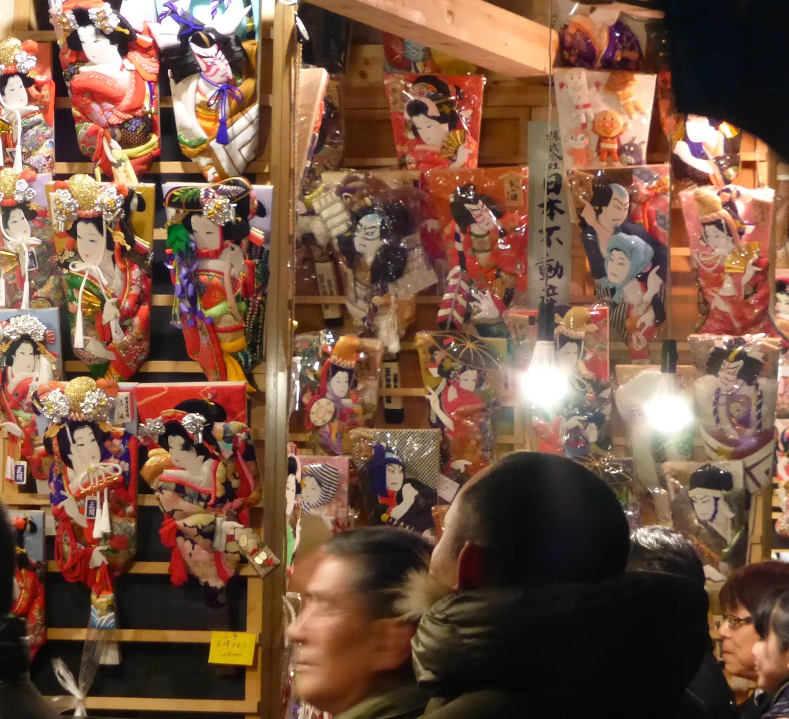
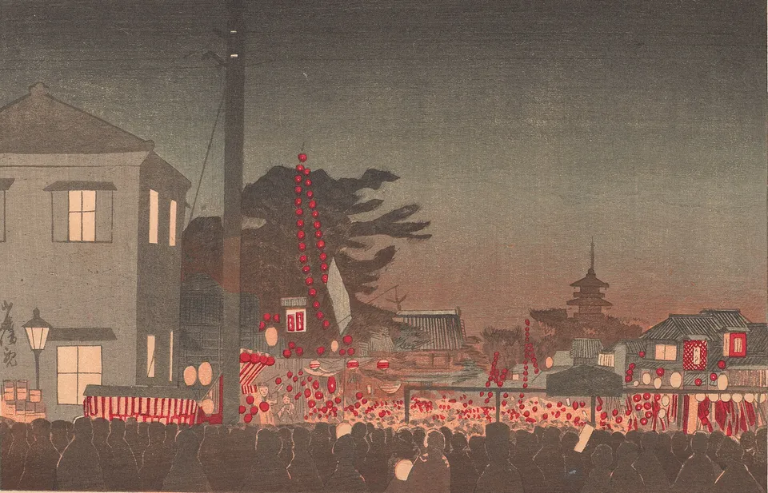
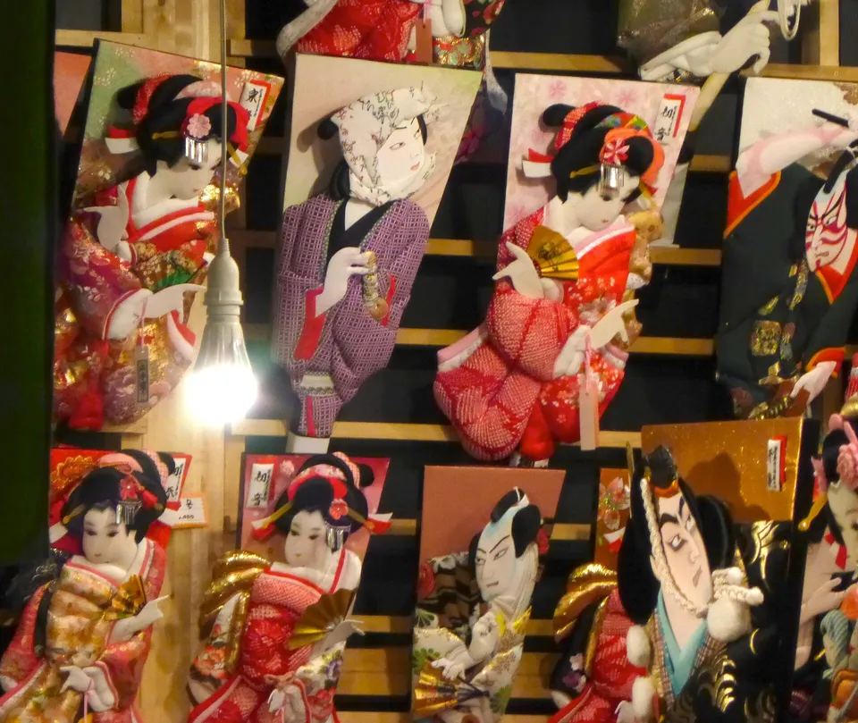
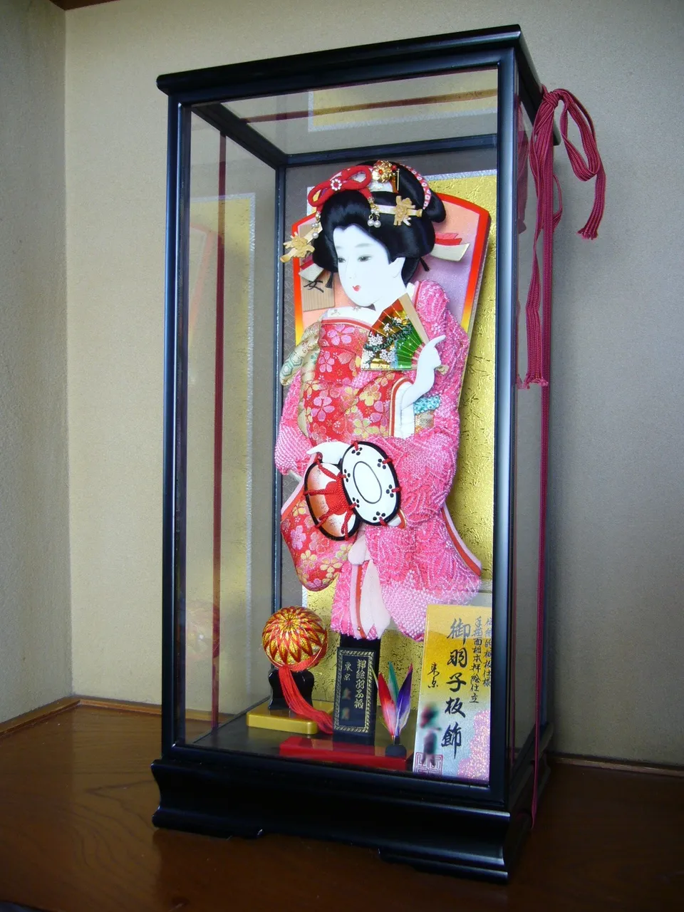
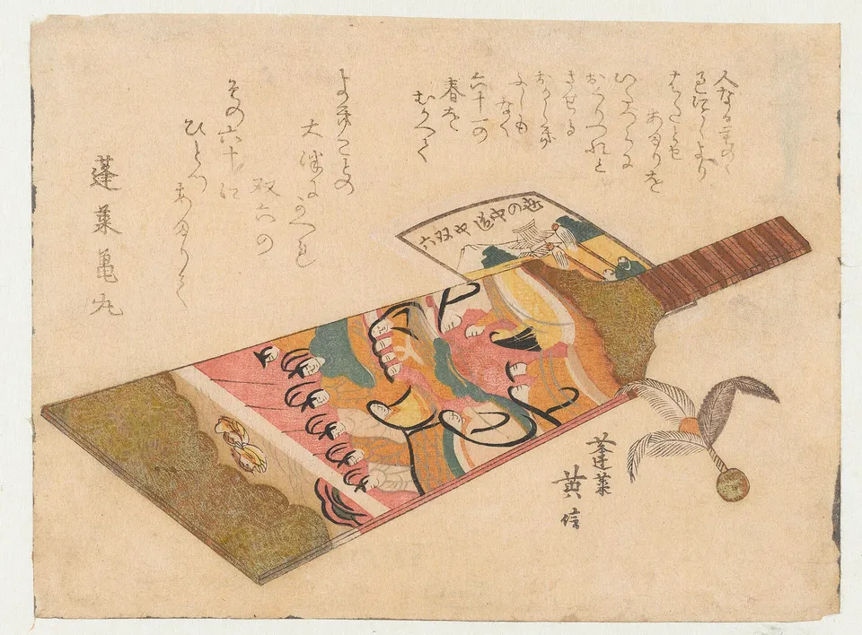
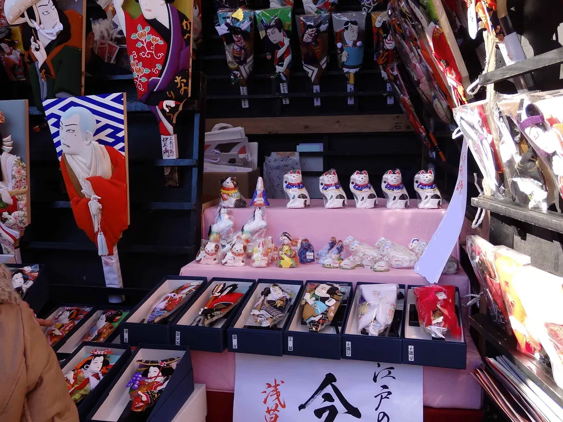

Hagoita-ichi: Asakusa's December market of decorated paddles
For three days every December, the grounds of Sensō-ji in Asakusa turn into a wall of paddles. Courtesans and kabuki actors in padded fabric look out from stalls lit by bare bulbs, some no longer than your hand, some taller than you. This is hagoita-ichi (羽子板市), the battledore market. Unlike tori-no-ichi, whose dates wander around November, it never moves: 17 to 19 December, every year. In 2026 that is Thursday to Saturday. The one detail that does change is the opening hours, and those had not been published for 2026 when this was written.

17–19 December, and the hours to check
The dates come from Kannon, the bodhisattva Sensō-ji is built around. The 18th of every month is Kannon's ennichi (縁日), a day of special connection, and Sensō-ji calls the one on 18 December osame-no-kannon (納めの観音), the last Kannon day of the year. The market sits on either side of it, from the 17th to the 19th, so there is nothing to look up except the weekday.
| Date | 2026 | Notes |
|---|---|---|
| 17 December | Thursday | First day |
| 18 December | Friday | Osame-no-kannon, Sensō-ji's last Kannon day of the year |
| 19 December | Saturday | Last day. In 2025 it closed earlier than the other two |
Hours are the part to confirm. GO TOKYO, Tokyo's official tourism site, listed the 2025 market as 9:00 to 19:30, closing at 19:00 on the last day. When this guide was checked on 6 October 2026, neither GO TOKYO nor Sensō-ji had posted hours for 2026. Plan around the 2025 pattern, then check again in December.
The 19th is a Saturday this year and, if the 2025 pattern holds, also the shortest day. For room to look at the paddles, go on the Thursday or Friday. For the photographs, go after dark: Tokyo's sunset in mid-December comes at about 16:30, and the paddles hang under bare bulbs.
From Edo's year-end fair to the paddle market
Sensō-ji tells the story on its own site. In the Edo period, merchants counted on the crowds who came for Kannon's day on 17 and 18 December, and set up stalls in the temple grounds selling New Year goods and lucky charms. The fair came to be called toshi-no-ichi (歳の市), the year-end market. From around the end of the Edo period, more and more of those stalls sold hagoita.

GO TOKYO fills in the rest: the name hagoita-ichi had settled by the middle of the Shōwa era, and the market has run for about 360 years without a break, through the 1923 Great Kantō Earthquake and the Second World War. Japanese listings still use both names together, as 歳の市（羽子板市）.
What you're looking at: oshie hagoita
A hagoita (羽子板) is the paddle for hanetsuki (羽根つき), a New Year game like badminton without a net. The ones at this market are not for playing. They are oshie hagoita (押絵羽子板): pictures built from card shapes wrapped in cotton and fabric, layered so that faces, hair and sleeves stand up off the board. Saitama Prefecture, whose Kasukabe workshops make them, dates the first oshie paddles to the Bunka and Bunsei years (1804–1830), and notes that the padded figure and the painted face are made by different specialists.

The usual subjects are kabuki actors in famous roles and women in elaborate kimono. The numbers are what surprise people. GO TOKYO put the 2025 display at around 10,000 Edo oshie hagoita, from 15 cm to about 2 m. Edo oshie (江戸押絵) is a nationally designated traditional craft, and the 2025 market had stalls for more than 20 kinds of designated crafts, with craftspeople demonstrating their work.
Every December, Japanese news shows paddles featuring the year's big names; Shohei Ohtani has been on several. Many of those are the kawari hagoita (変わり羽子板) that the doll maker Kyūgetsu has unveiled every year since 1986 at its own Tokyo headquarters, separate from the market. Modern characters do turn up at the stalls among the kabuki classics (look closely at the photo at the top of this page), but don't go expecting the exact paddle you saw on TV.
Why a paddle is a lucky charm
GO TOKYO gives the shape as the reason. A hagoita widens towards the top like the slopes of Mount Fuji, a form called suehirogari (末広がり) that reads as fortune spreading outwards, so since the Edo period it has been kept as a charm for children and grandchildren to prosper and to ward off bad luck. Sensō-ji's page explains the shuttlecock as well. The feathered hane looks like a dragonfly, and dragonflies eat insects, so the hane "eats" the bad bugs that bring illness. The bead at its tip is called a mame (bean), a pun on mame ni kurasu, living in good health.


Photos: A display hagoita in its glass case, the way households set one out for the New Year — katorisi, CC BY 3.0, via Wikimedia Commons · A battledore and shuttlecock in a surimono print by Kikugawa Eishin, 1810s — Kikugawa Eishin (poems: Hōrai Kanemaru), Public domain, via Wikimedia Commons
That is why a paddle is a baby present. The doll maker Kyūgetsu describes the custom: a decorated hagoita is given to a girl for her first New Year (初正月, hatsu-shōgatsu), with the wish that she grows up without misfortune or illness. Boys get a hamayumi (破魔弓), a ceremonial bow for breaking evil, a custom Kyūgetsu dates to the Edo period. GO TOKYO adds that from the Edo period to the Taishō era, kabuki-actor paddles were sent as year-end gifts to households with children.
Before you buy one
None of the official pages checked for this guide publishes prices, and with paddles running from palm-sized to two metres, the range is wide. Ask at the stall. A few practical points:

- Think about the flight home. Many display paddles come mounted in glass cases. The small boxed paddles laid out on the front tables are the realistic buy if you are carrying one back in a suitcase.
- Look past the paddles. Stalls also sell other New Year goods. In the photo above, a stall has set out Imado-ware beckoning cats next to its paddles.
- Old paddles have a send-off. The market includes a hagoita kuyō (羽子板供養), a memorial service for retired paddles. In 2025, GO TOKYO listed registration as 10:00–17:00, until 14:30 on the last day. Details such as any fee were not published, so ask on the day.
Getting there
The market fills the grounds of Sensō-ji, 2-3-1 Asakusa, Taitō City. The nearest station is Asakusa, on the Tokyo Metro Ginza Line, the Toei Asakusa Line, the Tobu Skytree Line and the Tsukuba Express. There is no ticket: the stalls stand inside a working temple, and none of the official pages lists an admission charge. You pay for what you buy.
If you are staying overnight for an evening visit, Asakusa itself is the easiest base. The walk from the station to the stalls is a few minutes.
Some links above are affiliate links. We may earn a commission at no extra cost to you. We only list services we'd use ourselves.
Hagoita-ichi is the middle of a run of markets that sell next year's luck. It starts with tori-no-ichi's bamboo rakes → on 7 and 19 November 2026, continues with the paddles here on 17–19 December, then moves to the Seven Lucky Gods stamp routes → in the first week of January and the daruma markets → on 6–7 January.
The Japanese you'll actually use
These are the words on the stall banners and Sensō-ji's notices, plus the two questions you will need at the counter.
| Japanese | Reading | Meaning |
|---|---|---|
| 羽子板市 | hagoita-ichi | the battledore (paddle) market |
| 歳の市 | toshi-no-ichi | year-end market, the older name |
| 納めの観音 | osame-no-kannon | the last Kannon day of the year, 18 December |
| 押絵羽子板 | oshie hagoita | paddle decorated with padded-fabric pictures |
| 羽根つき | hanetsuki | the New Year paddle-and-shuttlecock game |
| 末広がり | suehirogari | widening towards the end, a lucky shape |
| 初正月 | hatsu-shōgatsu | a baby's first New Year |
| 羽子板供養 | hagoita kuyō | memorial service for old paddles |
| いくらですか？ | ikura desu ka? | How much is it? |
| 小さいのはありますか？ | chiisai no wa arimasu ka? | Do you have a smaller one? |
Want these to stick? The free JLPT battle quiz drills travel and culture vocabulary like this with spaced repetition.
Common questions
Q. When is Hagoita-ichi in 2026?
A. From Thursday 17 to Saturday 19 December 2026. The market is held on 17–19 December every year, around osame-no-kannon on the 18th, so the dates do not change.
Q. What time is Hagoita-ichi open?
A. GO TOKYO listed the 2025 market as 9:00 to 19:30, closing at 19:00 on the last day. Hours for 2026 had not been published when this guide was checked on 6 October 2026, so confirm closer to the date.
Q. What is a hagoita?
A. The paddle used in hanetsuki, a New Year game like badminton without a net. The paddles sold at the market are decorative oshie hagoita, with raised pictures of kabuki actors or women in kimono made from cotton-padded fabric.
Q. Why is a hagoita considered lucky?
A. Its shape widens towards the top like Mount Fuji, which is read as fortune spreading outwards. Sensō-ji also explains that the feathered shuttlecock resembles a dragonfly that eats the bugs that bring illness, and that its bead, the mame, stands for living in good health. A decorated paddle is a traditional gift for a baby girl's first New Year.
Q. Do I need a ticket?
A. No. The market is held in the grounds of Sensō-ji, and none of the official pages lists an admission charge. You pay only for what you buy.
Q. How much does a hagoita cost?
A. No official price list is published. Paddles range from about 15 cm to about 2 m, so prices vary widely. Ask at the stall; small boxed paddles are the practical choice if you are flying home.
Q. Are the celebrity hagoita on Japanese TV sold at the market?
A. Many of them are the kawari hagoita that the doll maker Kyūgetsu has unveiled every December since 1986 at its Tokyo headquarters, which is a separate event. The market stalls carry mostly traditional subjects, with some modern characters mixed in.
Q. What is the hagoita kuyō?
A. A memorial service for old paddles, held during the market. In 2025, registration ran 10:00–17:00, until 14:30 on the last day.